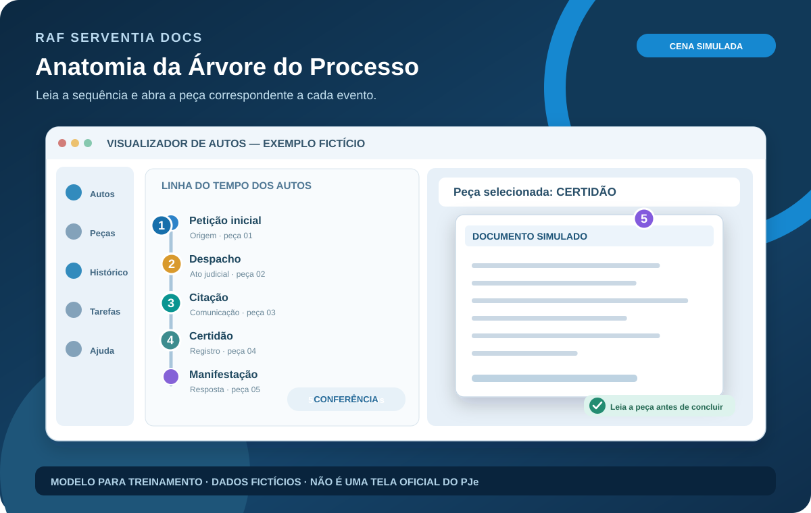
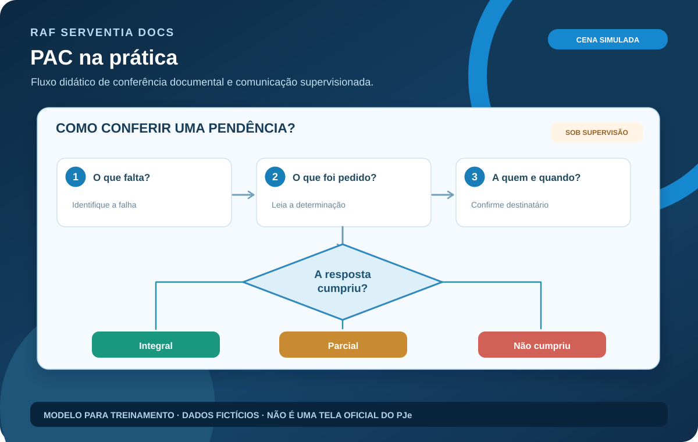
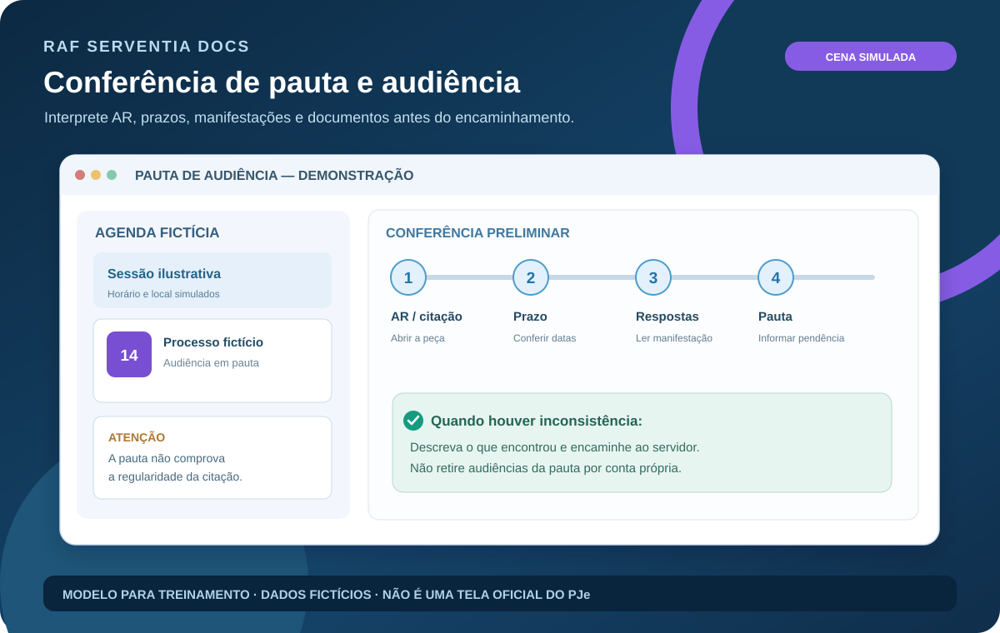
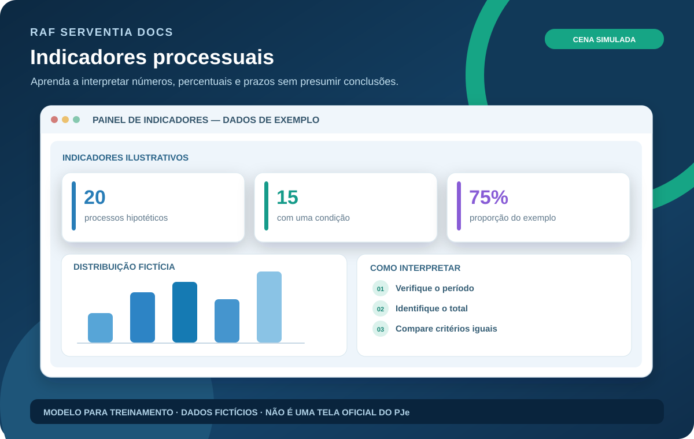

01
Aprender do zero
Trilha guiada com termos explicados, telas simuladas e exercícios comentados. Indicada para quem está começando.
Entrar na trilha →MANUAL ONLINE · APRENDER UM PASSO POR VEZ
Aprenda o que observar, por que conferir e quando pedir supervisão — com imagens, exemplos fictícios e escolhas explicadas. Sem precisar ler uma página enorme.
Trilha guiada com termos explicados, telas simuladas e exercícios comentados. Indicada para quem está começando.
Entrar na trilha →Localize pelo código ou assunto. O catálogo mantém as 96 referências e o acesso à documentação técnica anterior.
Buscar procedimento →VISUALIZAÇÃO PREMIUM
Seis aulas com cenas ilustradas, diagramas, decisões e exemplos fictícios.




BIBLIOTECA TÉCNICA
Carregando…